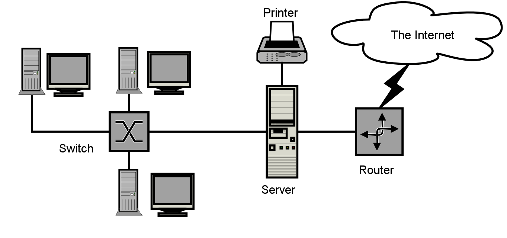

Personal Area Network (PAN) :
En français, réseau personnel. Il permet l’échange des données entre nos appareils personnels comme les smartphones, tablettes, ordinateurs…
Ces derniers peuvent être connectés à un réseaux adapté. On parle de réseaux domestique. Les techniques de transmission les plus utilisées sont l’USB et le FireWire. Le réseaux personnels sans fils (WPAN) repose sur des technologies comme le Bluetooth, USB sans fil, INSTEON, IrDA, ZigBee ou Z-Wave. Les WPAN et les PAN ne couvrent généralement que quelques mètres et ne sont pas adaptés pour connecter des appareils se trouvant dans des pièces ou bâtiments différents.
En plus de la communication de plusieurs appareils entre eux, un réseau personnel permet également la connexion à d’autres réseaux.On parle dans ce cas d’un Uplink ou de liaison montante. En raison de la portée limitée et d’un taux relativement faible de transfert de données, les PAN sont principalement utilisés pour relier des périphériques à usage récréatif comme par exemple des écouteurs sans fil. Dans le cas de l’Internet des objets, les WPAN sont utilisés pour la communication, le contrôle et la surveillance des applications à faible débit de données.
Local Area Network (LAN) :
Cela signifie réseau local, en français. Un tel réseau peut relier deux ordinateurs d’une maison ou alors plusieurs centaines d’appareils au sein d’une entreprise, dans les écoles, universités…
Une norme commune très répandue pour les réseaux locaux câblés est le protocole Ethernet ou le protocole TCP/IP
La transmission de données est réalisée électroniquement sur la base de câbles de cuivre ou via des câbles de fibre optique.
Si plus de deux ordinateurs sont imbriqués ensemble dans un réseau local, des composants supplémentaires comme un hub (ou concentrateur), bridge (pont) ou un switch (commutateur réseau) sont nécessaires.
Un LAN est conçu pour permettre un transfert rapide de grandes quantités de données.
Selon la structure du réseau et du moyen de transmission utilisé, un débit de données de 10 à 1000 Mbit/s est courant.
Dans le contexte d’une entreprise, il est courant que plusieurs ordinateurs de travail partagent des serveurs de fichiers, des imprimantes réseau ou des applications sur le LAN.
Si un réseau local est implémenté par radio, on le nomme alors WLAN (wireless local area network) ou réseau local sans fil.
La portée d’un réseau LAN peut être augmenter grâce à un répéteur.
Plusieurs LAN (Local Area Network) à proximité géographique peuvent se connecter à un MAN (Metropolitan Area Network) ou WAN (Wide Area Network).

Metropolitan Area Network (MAN) :
En français, réseau métropolitain. C’est un réseau de télécommunication à large bande qui relie plusieurs LAN qui à proximité. Souvent il s’agit de différentes branches d’une société qui sont reliées à un MAN via des lignes loués. Cela permet d’avoir un débit plus élevé que l’internet grâce à des routeurs et des connexions de très hautes performantes, comparable à un réseaux local.
L’infrastructure pour le MAN est assurée par les opérateurs de réseaux internationaux. En tant que réseau métropolitain, les villes câblées peuvent être intégrées dans les réseaux étendus : WAN (Wide Area Networks) et sur le plan international au niveau des GAN (Global Area Networks).
Wide Area Network (WAN) :
Qui signifie réseau étendu, en français. Alors que les réseaux métropolitains relient des zones qui se trouvent proches les unes des autres dans des zones rurales ou urbaines, les WAN (Wide Area Network) ou réseaux étendus couvrent des vastes zones géographiques à l’échelle d’un pays ou d’un continent par exemple. En principe, le nombre de réseaux locaux ou d’ordinateurs connectés à un réseau étendu est illimité.
Les WAN sont souvent détenus par des entreprises ou une organisation, ces réseaux sont donc loués ou exploités en privé.
Les fournisseurs de services Internet utilisent des WAN pour connecter les réseaux locaux d’entreprises et les clients à Internet.
Global Area Network (GAN) :
En français, réseau global. Un réseau mondial comme Internet est aussi appelé GAN (Globe Area Network). Internet n’est cependant pas le seul réseau informatique de ce genre.
Les GAN utilisent les infrastructures de fibre optique des réseaux étendus et combinent ces derniers avec des câbles sous-marins internationaux ou des transmissions par satellite.
Virtual Private Network (VPN) :
Réseau privé virtuel, en français. C'est un réseau privé qui permet à l’utilisateur d'avoir un lien entre différents ordinateurs distants tout en isolant leurs échanges.
Le réseau public est utilisé comme moyen de transport, les VPN sont généralement cryptés pour s’assurer de la confidentialité des données. Les VPN (Virtual Privat Network) sont utilisés pour connecter les réseaux locaux sur Internet ou pour permettre l’accès à distance à un réseau ou à un seul ordinateur via la connexion publique.